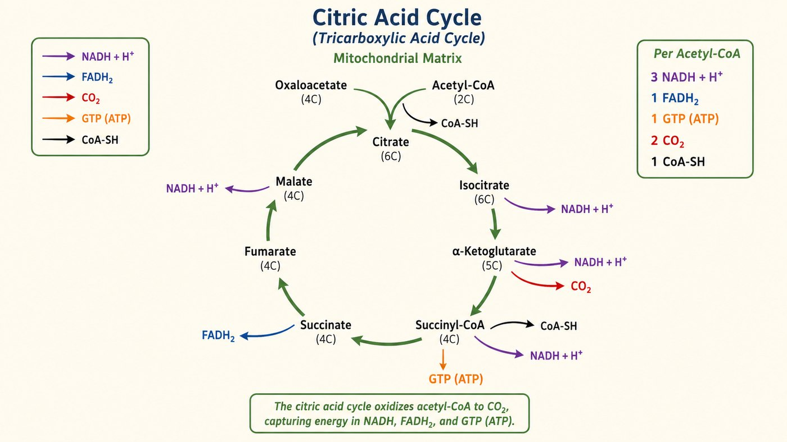

第 14 週
Chu trình acid citric
Câu chuyện tiếp tục
今天:把碳徹底燒掉,收集電子。
Hôm nay: đốt sạch carbon, thu electron.
3 tên, 1 thứ
Citric acid cycle
chu trình acid citric
Krebs cycle
chu trình Krebs
三羧酸循環
cùng một thứ
Từ vựng · 不用背,看過就好
| 中文 | Tiếng Việt | English | 中文 | Tiếng Việt | English |
|---|---|---|---|---|---|
| 檸檬酸循環 | Chu trình acid citric | Citric acid cycle | 去羧作用 | Sự khử carboxyl | Decarboxylation |
| 乙醯輔酶A | Acetyl-CoA | Acetyl-CoA | 草醯乙酸 | Oxaloacetate | Oxaloacetate |
| 丙酮酸去氫酶 | PDH | PDH complex | 回補反應 | PƯ bổ sung | Anaplerotic |
| 檸檬酸 | Citrate | Citrate | FADH₂ | FADH₂ | FADH2 |
| GTP | GTP | GTP | α-酮戊二酸 | α-ketoglutarate | α-KG |
Một vòng

入口:乙醯CoA + 草醯乙酸 → 檸檬酸。
Vào: acetyl-CoA + oxaloacetate → citrate.
Sản phẩm 1 vòng
Vì sao gọi là chu trình
再接下一個乙醯CoA。
Tiếp nhận acetyl-CoA mới
可拿去做胺基酸(兩性途徑)。
Cũng làm nguyên liệu
Tổng kết đường đi
| 階段 | 產物 |
|---|---|
| 糖解 | 2 ATP + 2 NADH |
| 丙酮酸 → 乙醯CoA (×2) | 2 NADH |
| 檸檬酸循環 (轉兩圈) | 6 NADH + 2 FADH₂ + 2 GTP |
| 下一步 | NADH、FADH₂ 送去第 15 週發電 |
Bài tập: Đếm
檸檬酸循環轉一圈,做出:
Một vòng chu trình acid citric tạo ra:
NADH
FADH₂
CO₂
Bài tập: Đúng hay sai
乙醯CoA 有 2 個碳。
Acetyl-CoA có 2 carbon.
一圈循環產生 3 個 FADH₂。
Một vòng chu trình tạo ra 3 FADH₂.
草醯乙酸在循環後會再生。
Oxaloacetate được tái tạo sau chu trình.
檸檬酸循環會放出 CO₂。
Chu trình acid citric giải phóng CO₂.
想一想:一直拿走中間物。循環會怎樣?怎麼補救?
Suy nghĩ: nếu liên tục lấy đi chất trung gian, chu trình sẽ ra sao?
下週 · Tuần sau
Phosphoryl hóa oxy hóa
▶ 課前:看詞彙表第 15 週(17 個詞)
Xem trước 17 từ của tuần 15
▶ 小測:下週前 10 分鐘,考今天的詞
Kiểm tra 5 câu
▶ 提示:今天的 NADH、FADH₂,下週拿去發電
Gợi ý: NADH/FADH₂ → phát điện